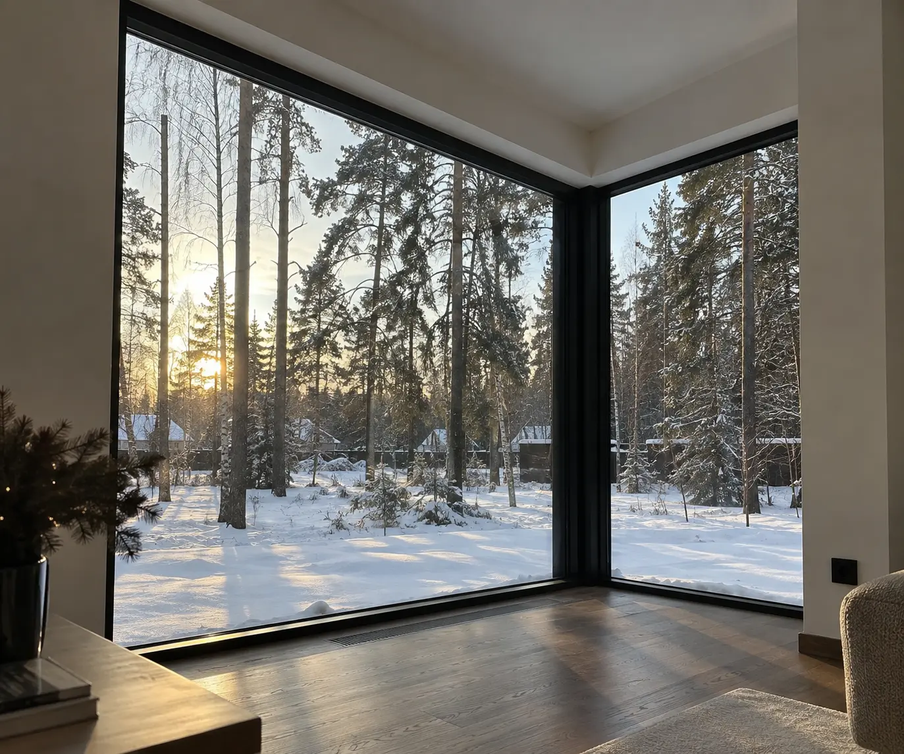

HS3 · ALUMARK S158D1
Roto Patio Lift
2 активные + 1 фиксированная
2 цвета
489 000 ₽
В наличии
14 дней
STD-HS3-S158-3600X2300-7016-D1

HS4 · ALUMARK S158
Technical scheme
Схема относится к конкретному SKU. Для HS4 используется только центральное раскрытие A7 — без выдуманного направления.

Specification
Физический состав изделия отделён от доставки и монтажа.
Related

Project request
Оставьте имя и телефон. Все формы используют один компонент и одни размеры.